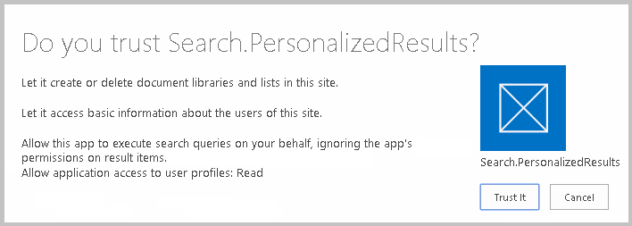
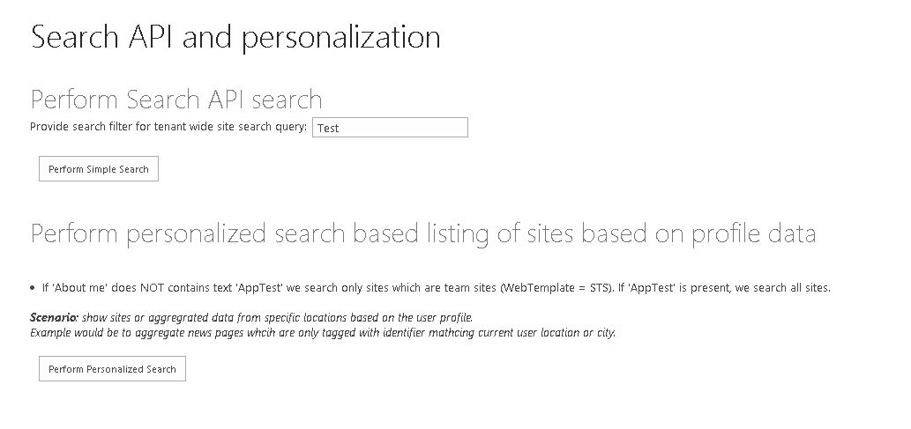

Summary: Learn how to use the SharePoint search query CSOM to return search results in an app for SharePoint.
Last modified: August 26, 2014
In this article
Description of the sample
Prerequisites
Key components of the sample
Configure the sample
Run and test the sample
Next steps
Change log
Related content
Description of the sample
This sample app for SharePoint shows how to use the search query CSOM to return search results, first just based on the user's query, and second, personalized based on the user submitting the query.
The basic search example allows the user to provide a search filter to be used for a tenant-wide search and is looking for sites that apply to the user-supplied filter.
The personalized search results example loads your user profile properties and checks for "Apptest" in the AboutMe profile property. If it is found, a list of site templates of any type is returned in the search results. If it is not found, only STS web templates are returned in the search results.
Prerequisites
This sample requires the following:
-
Visual Studio 2012 or Visual Studio 2013
-
Microsoft Office Developer tools for Visual Studio 2012 or Visual Studio 2013
-
SharePoint 2013 development environment
Key components of the sample
The sample app contains the following:
-
Search.PersonalizedResults project, the app for SharePoint project.
-
Search.PersonalizedResultsWeb project, the ASP.NET web application project.
-
Default.aspx. located in the Search.PersonalizedSearchResults\PersonalizedSearchResultsWeb\Pages directory, which contains the HTML and ASP.NET controls for the sample's user interface
-
Default.aspx.cs located the PersonalizedSearchResultsWeb\Pages directory, which contains the code that submits both the basic search and the personalized search queries to SharePoint. The code also parses and writes out the search results returned.
-
SharePointContext.cs located in the Search.PersonalizedSearchResults\PersonalizedSearchResultsWeb directory, which encapsulates the information that the sample app needs to get from SharePoint.
Configure the sample
Update the Site URL property of the Search.PersonalizedResults app for SharePoint project with the URL of your SharePoint site. You may be prompted to enter your credentials to access the site.
Run and test the sample
To run and test the sample, do the following:
-
Press F5 to run the app.
-
Sign in to your SharePoint site if you are prompted to do so by the browser.
-
If you are prompted to trust the self-signed Localhost certificate, click Yes.
Figure 1. Security alert: self-signed certificate.

You may also be prompted to install the certificate, if so, click Yes.Figure 2. Security warning: install certificate.
-
On the consent page to grant permissions to the app, select Trust It.
Figure 3. Grant app permissions

You should now see the app displayed in the browser.

Next steps
See Deploying and installing apps for SharePoint: methods and options for instructions on how to publish your app.
Change log
First release.